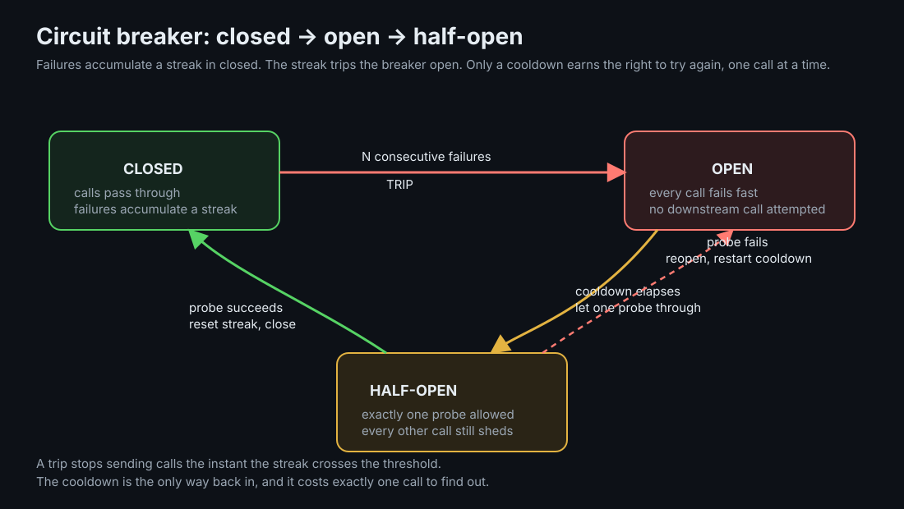
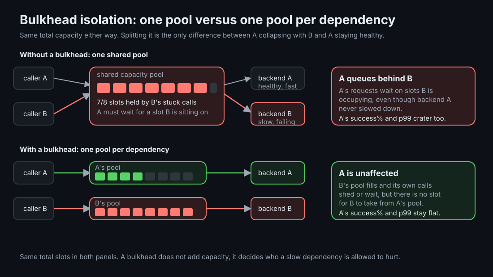

Circuit Breakers, Bulkheads, and Load Shedding
A slow or failing dependency should cost you exactly what it costs, nothing more. These three mechanisms stop one unhealthy call from spending capacity that unrelated, healthy calls needed.
TLDR
- A circuit breaker stops sending calls to a dependency that is already failing, instead of letting every caller discover that the hard way.
- A bulkhead limits the blast radius of a dependency that is still being called: a bounded, per-dependency capacity pool so one slow dependency cannot consume the capacity another one needs.
- Load shedding is what makes both useful: rejecting immediately when a breaker is open or a pool is full, rather than queueing work that has nowhere to go.
- They answer different questions: should we call this dependency at all (breaker), how much of our capacity can it use if we do (bulkhead), and what do we do with the caller while we decide (shedding).
Mental Model
An electrical circuit breaker trips to protect the house wiring, not the appliance that caused the surge. It does not try to fix the short; it just stops current from flowing until someone resets it. A software circuit breaker does the same job for a call to a dependency: once that dependency looks broken, the breaker stops sending it traffic, protecting the caller's own resources rather than trying to save the callee.
A breaker has three states. Closed is normal: calls pass through and the breaker is watching for failures. Enough consecutive failures trip it open: every call fails immediately, without even attempting the dependency. After a cool-off, the breaker allows exactly one half-open probe through to test whether the dependency has recovered; success closes it again, failure reopens it and restarts the clock.

Ground-Up Explanation
Why fail fast beats piling on
When a dependency is overloaded or down, every caller that still tries to reach it pays the cost of finding out: a connection attempt, a timeout, a thread or goroutine tied up waiting. None of that helps the dependency recover, and all of it is capacity the caller cannot spend on requests that could actually succeed. Failing fast, refusing the call before it is even attempted, is strictly better once you are confident the dependency is unhealthy: it returns control to the caller immediately and stops contributing to the dependency's own overload.
The cascade mechanism
The dangerous case is not a request that fails. It is a request that fails slowly, and does so while holding a limited resource, a connection, a thread, a queue slot, that a healthy, unrelated request also needed. If a caller has one shared pool of capacity for all of its downstream calls, and one of those downstreams starts responding slowly, the slow downstream's calls sit in that shared pool for as long as they take to fail. Every slot they occupy is a slot a call to a perfectly healthy dependency cannot use. The healthy dependency did nothing wrong; it is being starved by proximity, sharing a resource with something that broke.
This is how a single degraded dependency turns into a full outage: not because the failure spreads through any code path, but because capacity is shared and one consumer of that capacity stopped giving it back quickly.
Concept Deep Dive
Thresholds and cool-off
A breaker's threshold, how many consecutive failures trip it, trades false positives against reaction time. Too low, and a brief blip trips the breaker unnecessarily, shedding traffic a healthier retry could have served. Too high, and the breaker waits through a long run of real failures before it starts protecting anyone. The cool-off period has a matching trade-off: too short and the breaker reopens instantly against a dependency that has not actually recovered; too long and it keeps shedding traffic after the dependency is fine again. Neither number has a universally correct value; both should be set from the dependency's real failure and recovery timescales, not copied from an example.
Bulkhead isolation
A bulkhead is a bounded concurrency pool scoped to one dependency. The name comes from ship design: a hull is divided into watertight compartments so that a breach in one does not sink the whole ship. The software version divides shared capacity, connections, threads, an in-flight request budget, into per-dependency compartments so that one dependency's failure mode cannot spend another's share. Splitting a pool does not create new capacity; a bulkhead trades total throughput headroom for a guarantee about which failures can affect which callers.

Load shedding
A breaker decides not to call a dependency; a bulkhead limits how many calls can be in flight to it. Neither one, on its own, decides what happens to a caller that arrives once the breaker is open or the pool is full. Load shedding is that decision: reject immediately rather than queue. The alternative, blocking the caller until a slot frees or the breaker closes, feels gentler but is usually worse: it turns a resource limit into unbounded queueing latency, and an open-loop caller that would have simply retried or failed over now sits waiting for an answer that arrives too late to be useful, if it arrives at all. Shedding converts "eventually fails, expensively" into "fails immediately, cheaply," which is a strictly more useful signal to give a caller.
Breaker versus retry budget
A circuit breaker and a retry budget are both defenses against sending too much traffic to a struggling dependency, but they act at different granularities. A retry budget throttles smoothly: it caps retries as a fraction of traffic, so a dependency with an isolated, low failure rate still gets some retries while one failing broadly gets almost none. A breaker acts in discrete jumps: closed or open, all calls or none. Where retries make sense at all, a budget is often the gentler first line of defense; a breaker is the blunter tool for when you want an abrupt, unambiguous stop rather than a gradual throttle. They are not mutually exclusive; a breaker can sit in front of a retrying caller and stop the retries entirely once a dependency is clearly down.
Where each belongs
A breaker belongs at the point that decides whether to call a specific dependency at all: the client of that dependency, not further upstream. A bulkhead belongs anywhere multiple dependencies share a caller's resources, which is nearly everywhere a service has more than one downstream. Shedding belongs wherever either of the other two can produce a full-or-open condition: it is the answer to "now what," not a mechanism on its own.
Implementation Details
- Track consecutive failures, not a rolling error rate, for the simplest correct breaker; a rate-based trigger adds a time window to reason about but reacts to sustained partial failure better.
- The half-open state must allow exactly one in-flight probe. Letting every caller probe simultaneously the instant the cooldown expires reproduces a thundering herd against a dependency that may still be fragile.
- Size a bulkhead from the caller's own capacity, not the dependency's. The pool exists to protect the caller; its size is "how much of my own capacity am I willing to risk on this dependency," not an estimate of the dependency's throughput.
- Shedding needs a cheap rejection path. If failing fast still means allocating a connection or doing meaningful work before saying no, it has not actually solved the problem it exists to solve.
- State must be shared across the instances handling one dependency, or scoped correctly if it is per-instance; a breaker that only one of ten instances knows is open protects one tenth of the traffic.
- Expose breaker and bulkhead state as metrics. An open breaker is exactly the kind of event that should page someone or show up on a dashboard, since it means a dependency is currently considered unusable.
Production examples: where to apply this
For gRPC services, these controls usually live in interceptors. A client interceptor protects the caller before the RPC leaves the process: acquire a token for Service/Method, check the breaker's state, then call the downstream or fail fast. A server interceptor protects the callee before the handler runs: classify by method, caller, tenant, or workload, acquire that pool's token, then run the handler. When the pool is full, return codes.ResourceExhausted; when the breaker is open for a downstream call, return a fast dependency-failure response such as codes.Unavailable.
The same shape applies outside gRPC. In HTTP services, use outbound client middleware for caller-side breaker and bulkhead logic, and inbound middleware for callee-side workload limits. In queue workers, use separate worker pools or semaphores per queue, message type, tenant, or priority class. In database-heavy services, keep independent connection or concurrency limits for foreground requests, background jobs, reporting queries, and backfills so slow maintenance work cannot spend the request path's budget.
The important choice is the classification key. A single global limit is almost always too blunt; useful bulkheads are scoped to the thing that should be isolated: dependency, endpoint, method, caller, tenant, workload, or priority. The rejection should be explicit and observable, not hidden as a timeout.
Lab Evidence
The runnable lab is labs/reliability/circuit-breaker: a real HTTP chain load → api → {backend-a, backend-b}, where backend-a stays healthy and backend-b is pushed into a degraded, overloaded state. Open-loop load drives both independently and measures each one's own success rate and latency, plus the breaker's own state transitions.
make break
Unprotected: one shared capacity pool, no breaker, no shedding. Watch A's success% and p99 crater even though A itself never slows down.
make test
Protected: breaker + bulkhead + shedding. A stays fast and healthy while B's breaker trips and fast-fails.
reported metrics
Per backend: requests, success%, p50/p99, plus B's breaker state transitions and the share of calls it fast-failed.
Measured: the same degraded dependency, isolated or not
Real run on 2026-07-08. Backend A offered 60 req/s, backend B offered 200 req/s against a degraded capacity of 90 req/s and a 40% base failure rate, both for 20s; shared/split capacity pool of 20, breaker threshold 5 consecutive failures with a 2s cool-off:
unprotected (cascade):
A (healthy): requests=1200 succeeded=239 (19.9%) p50=3s p99=3.002s
B (degraded): requests=3999 succeeded=378 (9.5%) p50=3s p99=3.002s
A breaker_state=closed breaker_trips=0 (no breaker: never engaged)
protected (isolated):
A (healthy): requests=1200 succeeded=1200 (100.0%) p50=7ms p99=9ms
B (degraded): requests=3999 succeeded=227 (5.7%) p50=1ms p99=108ms
B breaker_state=open breaker_trips=7 shed_breaker=3458 (86.5%) shed_bulkhead=142Backend A never changed between the two runs. What changed is whether backend B's overload could reach it: unprotected, A's success collapses from healthy to 19.9% and its p99 is pinned at the caller's own timeout, purely from queueing behind B's stuck calls in a shared pool. Protected, A holds 100% success at single-digit-millisecond latency. B's own success rate is low in both runs, 9.5% versus 5.7%, because B genuinely is overloaded past what it can serve either way; what changes for B is that its breaker trips seven times and fast-fails 86.5% of its calls in about a millisecond, instead of queueing into a multi-second timeout that also drained A's capacity.
Production Notes
- A breaker protects the caller, not the callee. It is not a mitigation for the dependency's outage; it is a mitigation for yours.
- Multiple independent instances of a caller need either shared breaker state or an accepted inconsistency window; a purely local breaker only ever sees its own instance's traffic and failure pattern.
- Bulkhead sizing is a capacity-planning exercise, not a constant to set once. It should move when the caller's total capacity or the number of dependencies sharing it changes.
- Test the cascade deliberately, with a real shared resource and a genuinely slow dependency. A breaker or bulkhead that has never been exercised against real contention is a config value, not a verified defense.
Code Pointers
| Code | Why it matters |
|---|---|
src/main.go | The breaker state machine, the per-downstream bulkhead pools, the shed-versus-queue branch, and the two independent open-loop load generators. |
README.md | Measured cascade output, single-knob breaker/bulkhead runs, and implementation hook notes. |
Makefile | The unprotected and protected policies as environment overrides, plus single-knob targets isolating the breaker and the bulkhead. |
compose.yaml | The HTTP chain services and environment-driven breaker, bulkhead, and shedding policy. |
Further Reading & Watching
- Book: Michael Nygard, Release It! Circuit Breaker, Bulkhead, and Fail Fast as named stability patterns; the source of the vocabulary this page uses.
- Will circuit breakers solve my problems? by Marc Brooker. A skeptical, practitioner take on when breakers help and when a retry budget is the better tool.
- CircuitBreaker by Martin Fowler. The canonical short explanation of the pattern and its states.
- Hystrix: How it Works, Netflix. The wiki behind the library that popularized bulkhead isolation and breaker-per-dependency design in service meshes.
- resilience4j CircuitBreaker documentation. A concrete, actively maintained closed/open/half-open state machine reference.
- Handling Overload, Google SRE Book. Load shedding and graceful degradation as the last line of defense.
- Retry Amplification and Timeout Budgets, the companion topic on this site. Retries and breakers solve adjacent but different problems and often sit in the same call path.